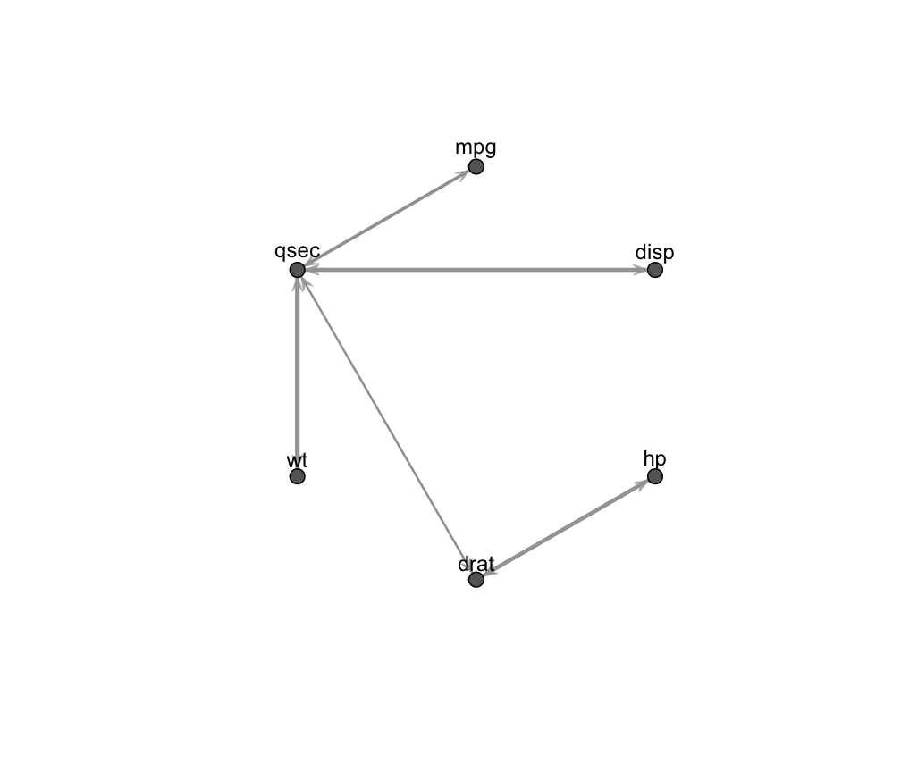
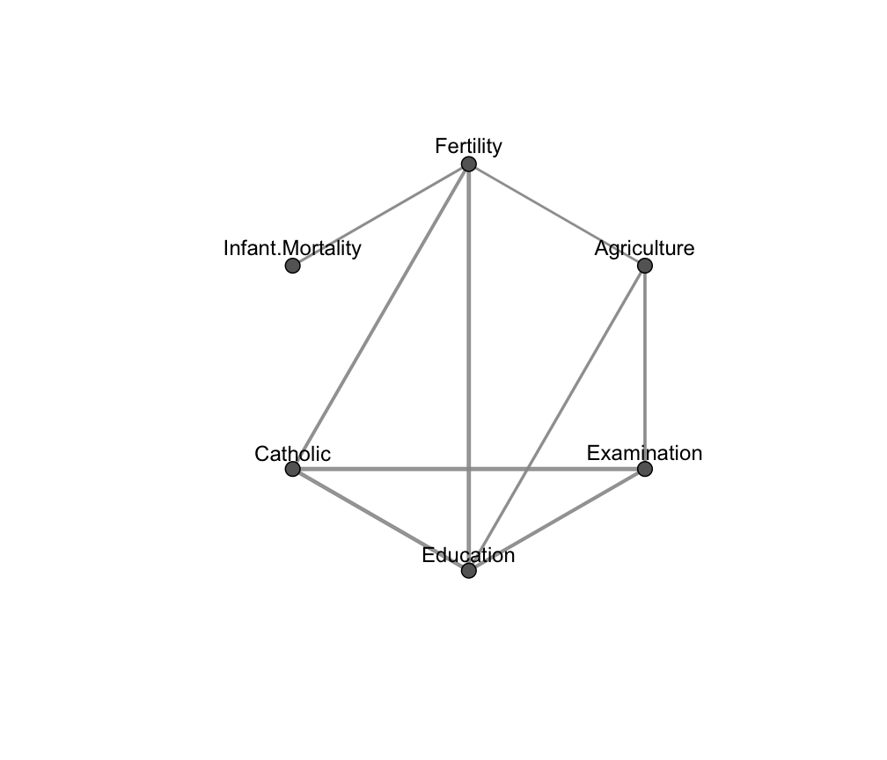

fitGGM.RdEstimation of a Gaussian graphical model given the graph structure corresponding to marginal or conditional independence restrictions.
fitGGM(data = NULL, S = NULL, N = NULL, graph, model = c("covariance", "concentration"), start = NULL, ctrlIcf = ctrlICF(), regularize = FALSE, regHyperPar = NULL, verbose = FALSE, ...)
| data | A dataframe or matrix, where rows correspond to observations and columns to variables. Categorical variables are not allowed. |
|---|---|
| S | The sample covariance matrix of the data. If |
| N | The number of observations. If |
| graph | A square symmetric binary adjacency matrix corresponding to the association structure of the graph. See "Details". |
| model | The type of Gaussian graphical model. Default is |
| start | A starting matrix for the estimation algorithm. If |
| ctrlIcf | A list of control parameters for the numerical algorithm for estimation of graphical model parameters; see also |
| regularize | A logical argument indicating if Bayesian regularization should be performed. Default to |
| regHyperPar | A list of hyper parameters for Bayesian regularization. Only used when |
| verbose | A logical argument controlling whether iterations of the estimation procedure need to be shown or not. |
| ... | Additional internal arguments not to be provided by the user. |
An object of class 'fitGGM' containing the estimated Gaussian graphical model.
The output is a list containing:
The estimated covariance matrix.
The estimated concentration (inverse covariance) matrix.
The adjacency matrix given in input corresponding to the marginal or conditional independence graph.
Estimated model type, whether "covariance" or "concentration".
Value of the maximized log-likelihood.
Number of estimated parameters.
Number of observations.
Number of variables, corresponding to the number of nodes in the graph.
Number of iterations for the algorithm to converge.
The function estimates a Gaussian graphical model given the graph association structure provided in input by the binary adjacency matrix. In the adjacency matrix, a zero entry corresponds to two variables being independent, marginally or conditionally according to the model.
If model = "covariance", a Gaussian covariance graph model is estimated, and the joint distribution of the \(V\) dimensional vector of variables \(X\) is parameterized in terms of the covariance matrix \(\Sigma\). It is assumed:
$$X \sim \mathcal{N}(\mu, \Sigma) \quad \Sigma \in C^{+}_G(A)$$
where \(C^{+}_G(A)\) is the collection of sparse positive definite matrices whose zero patterns are given by graph \(G\) represented by the adjacency matrix \(A\). In this type of model, the graph/adjacency matrix corresponds to marginal independence constraints among the variables, i.e. the variables associated to two non-connected edges in the graph are marginally independent. As a result, the covariance matrix sigma is estimated to be sparse according to the graph.
If model = "concentration", a Gaussian concentration graph model is estimated, and the joint distribution of the \(V\) dimensional vector of variables \(X\) is parameterized in terms of the concentration matrix (inverse covariance or precision matrix) \(\Omega\). It is assumed:
$$X \sim \mathcal{N}(\mu, \Omega) \quad \Omega \in C^{+}_G(A)$$
where \(C^{+}_G(A)\) is the collection of sparse positive definite matrices whose zero patterns are given by graph \(G\) embedded in the adjacency matrix \(A\). For this type of model, the graph/adjacency matrix corresponds to conditional independence constraints among the variables, i.e. the variables associated to two non-adjacent edges in the graph are conditionally independent given their common neighbors. It results in the concentration matrix omega being estimated to be sparse according to the structure of the graph.
Note that conditional independence does not imply marginal independence, and marginal independence does not imply conditional independence, therefore a sparse concentration matrix and a sparse covariance matrix do not necessarily match; See Whittaker (1990).
The Gaussian covariance graph model is estimated using the Iterative Conditional Fitting algorithm by Chaudhuri et al. (2007), while the Gaussian concentration graph model is estimated using the algorithm by Hastie et al. (2009).
Bayesian regularization is performed by means of a conjugate prior on the covariance/concentration matrix, similarly to what described in Fop et al. (2018). In the case of covariance graph model, an Inverse-Wishart distribution is used as a prior for \(\Sigma\), while a Wishart distribution is used for \(\Omega\) in the case of a concentration graph model. Regularization can be useful when the number of variables is larger than the number of observations.
Chaudhuri, S., Drton M., and Richardson, T. S. (2007). Estimation of a covariance matrix with zeros. Biometrika, 94(1), 199-216.
Fop, M., Murphy, T.B., and Scrucca, L. (2018). Model-based clustering with sparse covariance matrices. Statistics and Computing. To appear.
Hastie, T., Tibshirani, R. and Friedman, J. (2009). The Elements of Statistical Learning. Springer.
Whittaker, J. (1990). Graphical Models in Applied Multivariate Statistics. Wiley.
# Gaussian covariance graph model data(mtcars) x <- mtcars[,c(1,3:7)] R <- cor(x) # # model where variables with correlation less than 0.5 are marginally independent graph <- ( abs(R) < 0.5 )*1 diag(graph) <- 0 fit1 <- fitGGM(data = x, graph = graph) plot(fit1)# Gaussian concentration graph model data(swiss) # # fit a conditional independence model: V <- ncol(swiss) graph <- matrix( c(0,1,0,1,1,1, 1,0,1,1,0,0, 0,1,0,1,1,0, 1,1,1,0,1,0, 1,0,1,1,0,0, 1,0,0,0,0,0), V,V, byrow = TRUE ) fit2 <- fitGGM(swiss, graph = graph, model = "concentration") plot(fit2)# NOT RUN { data(marks, package = "ggm") # # the conditional independence model of Whittaker (1990), pag. 6 V <- ncol(marks) graph <- matrix( c(0,1,1,0,0, 1,0,1,0,0, 1,1,0,1,1, 0,0,1,0,1, 0,0,1,1,0), V,V, byrow = TRUE ) fit3 <- fitGGM(marks, graph = graph, model = "concentration") plot(fit3) # }